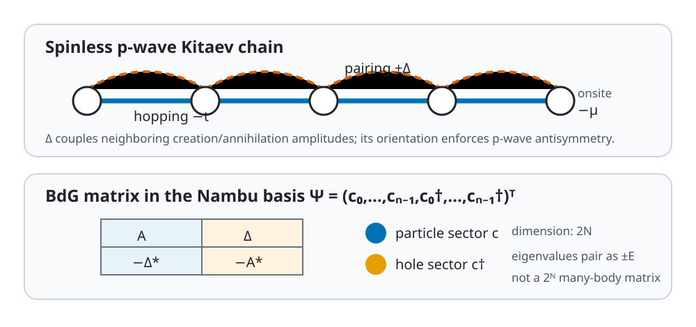

Kitaev BdG Chain
Purpose and structure
The spinless p-wave superconducting chain combines hopping, chemical potential, and nearest-neighbor pairing. The package returns
$$ \mathcal H_{\rm BdG}= \begin{pmatrix}A&D\-D^&-A^\end{pmatrix} $$
in the Nambu basis $(c_0,\ldots,c_{N-1},c_0^\dagger,\ldots,c_{N-1}^\dagger)^T$.

Basis and use
The BdG dimension is $2N$, not $2^N$.
from quantum_lattice_models import kitaev_chain_bdg
H = kitaev_chain_bdg(n_sites=10, hopping=1.0, pairing=0.5)
Parameters
| Builder | Parameter | Type | Default | Constraint |
|---|---|---|---|---|
kitaev_chain_bdg |
n_sites |
int |
8 |
>= 1 |
kitaev_chain_bdg |
hopping |
float |
1.0 |
|
kitaev_chain_bdg |
chemical_potential |
float |
0.0 |
|
kitaev_chain_bdg |
pairing |
complex |
0.5 |
|
kitaev_chain_bdg |
periodic |
bool |
False |
Validation and cautions
Hermiticity and spectral particle-hole pairing $E\leftrightarrow-E$ are tested. The returned matrix is a single-particle BdG representation, not the many-body Hamiltonian.